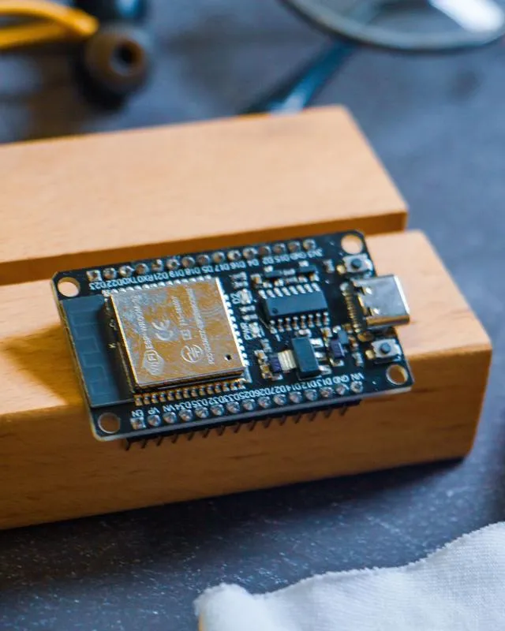

Servicios para empresas HealthTech y MedTech
Construimos y evolucionamos productos tecnológicos: software a medida, IA privada, automatización y dispositivos conectados. Un solo equipo, del primer prototipo a producción.
Hablemos de vuestro proyectoDesarrollo de software a medida
Es la puerta de entrada habitual: construir el producto, evolucionarlo o hacerlo mantenible. Nos ocupamos del ciclo completo, desde la definición técnica hasta la operación.
Plataformas web y aplicaciones móviles
Aplicaciones para pacientes, profesionales y equipos internos, con la experiencia de uso como parte del diseño.
Backend, APIs y arquitectura
Servicios, modelos de datos y APIs documentadas sobre las que el producto pueda crecer sin rehacerse.
Integración con sistemas externos y sanitarios
Historia clínica, FHIR, ERP, CRM y sistemas propios del cliente, con las garantías que exija cada entorno.
MVP y paso de prototipo a producto
Primera versión funcional, puesta en producción, mantenimiento y evolución planificada.
IA privada y automatización
Lo que nos distingue: llevar la IA al entorno del cliente cuando los datos no pueden salir. Modelos, asistentes y agentes que trabajan sobre información real y quedan conectados a los sistemas de la organización.
Modelos en vuestra propia infraestructura
Ejecutamos modelos abiertos en servidores de vuestra organización, sin enviar la información a proveedores externos.
Asistentes privados
Búsqueda y redacción sobre documentación interna, con el contenido bajo vuestro control.
Agentes conectados a sistemas empresariales
Consultan, preparan y ejecutan acciones en vuestras herramientas, con los límites y permisos que defináis.
Automatización de documentos, audio y datos
Transcripción, extracción de datos y clasificación de documentos sin salir del entorno.
Lo que completa el producto
Se combinan con el software y la IA cuando el proyecto lo necesita. No son el punto de partida habitual, pero marcan la diferencia en salud y envejecimiento.
IoT y hardware
Sensores, dispositivos conectados y prototipos, con el software que los une.
Interfaces para personas mayores
Diseño y evaluación con personas mayores, con usabilidad y accesibilidad probadas.
Análisis de datos y decisiones con IA
Limpieza, análisis y modelos para apoyar las decisiones de vuestro equipo.
Investigación e innovación
Apoyo técnico para definir, diseñar y prototipar proyectos de innovación tecnológica.
Todas las capacidades
Cada ficha explica para quién es el servicio, qué incluye y qué hemos entregado.
Software a medida
Plataformas web, apps móviles y backend para vuestro negocio, del primer prototipo a producción.
+IA privada y automatización
Asistentes, agentes y automatizaciones que funcionan en vuestra propia infraestructura, con vuestros datos bajo control.

+IoT y hardware
Dispositivos conectados, sensores y prototipos, con el software que los une.
+Interfaces para mayores
Diseñamos y evaluamos interfaces pensadas para personas mayores, con usabilidad y accesibilidad probadas.
+Decisiones con IA
Limpiamos y analizamos vuestros datos con inteligencia artificial (IA) y creamos modelos de IA para la toma de decisiones de vuestro equipo.
+Investigación e innovación
Apoyo técnico para definir, diseñar y prototipar proyectos de innovación tecnológica y de IA.
¿Por dónde empezar?
No hace falta que sepáis qué servicio necesitáis: contadnos el problema y os diremos con claridad por dónde ir.
Por el problema, no por la tecnología
Empezamos entendiendo qué queréis resolver y para quién. Si la respuesta es «esto no es para nosotros», os lo decimos desde el principio.
Seis servicios, un mismo equipo
Los servicios se combinan: un proyecto suele combinar software a medida, interfaces y datos. Si buscáis un producto listo para usar, consultad nuestras soluciones de IA privada.
Vuestros datos, en vuestra infraestructura cuando haga falta
Salud, investigación y entornos regulados no admiten improvisación: el dato trabaja dentro de vuestra infraestructura.
Cuéntanos qué necesitáis construir
Analizaremos vuestra necesidad y os ayudaremos a definir una solución técnica y los siguientes pasos. Contadnos qué necesitáis y os diremos con claridad si podemos ayudaros.